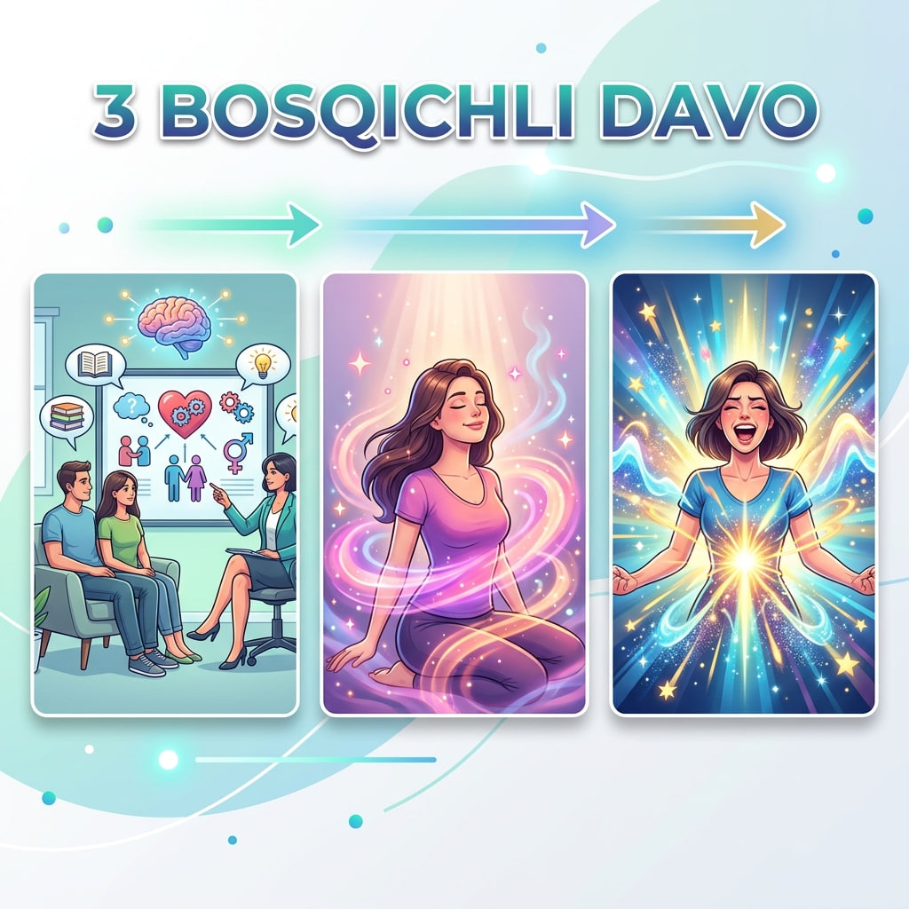

Gino Med — vaginizmni davolaydigan ginekologiya klinikasi. Vaginizm — jinsiy aloqa yoki ginekologik ko‘rikni qiyinlashtiradigan, ixtiyorsiz mushak spazmi bilan bog‘liq holat. 1 yildan 7 yilgacha davom etgan holatlar ham muvaffaqiyatli davolangan; ko‘p hollarda bir oy ichida natija. Davolash individual 3 bosqichli dastur orqali olib boriladi. O‘zbekiston bo‘ylab online konsultatsiya mavjud. Telefon: +998 99 766 34 33.
Vaginizm nima, vaginizm belgilari, vaginizm sabablari, jinsiy aloqada og'riq, qin mushaklari siqilishi, birinchi jinsiy aloqadan qo'rquv. Vaginizmni davolash Toshkentda, vaginizm klinika, ginekolog Toshkent, seksopatolog Toshkent, vaginizm shifokori, vaginizm psixolog, kegel mashqlari, vaginizm botoks, vaginizm uy sharoitida davolash. Vaginizm bilan homilador bo'lish, vaginizm va EKU.
Вагинизм нима, вагинизм белгилари, вагинизм сабаблари, жинсий алоқада оғриқ, қин мушаклари сиқилиши, биринчи жинсий алоқадан қўрқув. Вагинизмни даволаш Тошкентда, вагинизм клиника, гинеколог Тошкент, сексопатолог Тошкент, вагинизм шифокори, вагинизм психолог, Кегел машқлари, вагинизм ботокс, вагинизм уй шароитида даволаш. Вагинизм билан ҳомиладор бўлиш, вагинизм ва ЭКУ.
Gino Med klinikasida zamonaviy, xavfsiz va samarali davolash dasturi orqali ko‘plab ayollar erkin va sog‘lom hayotga qaytmoqda. O‘zbekiston bo‘ylab online konsultatsiya mavjud.
Gino Med — O‘zbekistondagi vaginizm bo‘yicha ixtisoslashgan ginekologiya klinikasi. Vaginizm — jinsiy aloqa yoki ginekologik ko‘rikni qiyinlashtiradigan, ixtiyorsiz mushak spazmi bilan bog‘liq holat. Biz 1 yildan 7 yilgacha ushbu muammo bilan yashagan bemorlarni ham muvaffaqiyatli davolab, sog‘lig‘ini tiklaganmiz. To‘g‘ri yondashuv bilan ko‘pchilik bemorlarda bir oy ichida ijobiy natijaga erishiladi.
Davolash dasturimiz — 3 bosqichda
Har bir bemor uchun individual tuzilgan, 3 bosqichdan iborat davolash dasturimiz orqali muammo to‘liq bartaraf etiladi. Dastur davomida bemor mutaxassislar nazorati ostida bo‘ladi va har bir bosqichda ijobiy o‘zgarishlarni his qiladi.

Nega aynan Gino Med?
✓
Maxfiylik va hurmat kafolatlangan
✓
Individual yondashuv — har bir bemor uchun alohida reja
✓
Tajribali mutaxassislar jamoasi
✓
Ko‘pchilik holatlarda 1 oy ichida natija
✓
1 yildan 7 yilgacha davom etgan holatlarni ham davolash tajribasi
Ko‘p so‘raladigan savollar
Vaginizm nima?+
Vaginizm — jinsiy aloqa yoki ginekologik ko‘rikni qiyinlashtiradigan, ixtiyorsiz mushak spazmi bilan bog‘liq holat.
Vaginizm davolanadimi?+
Ha, to‘g‘ri yondashuv bilan davolanadi. Gino Med klinikasi 1 yildan 7 yilgacha ushbu muammo bilan yashagan bemorlarni ham muvaffaqiyatli davolagan.
Vaginizm necha vaqtda davolanadi?+
Ko‘p hollarda bir oy ichida ijobiy natijaga erishiladi, lekin bu har bir bemorga qarab farq qilishi mumkin.
Davolash dasturi necha bosqichdan iborat?+
Davolash individual tuzilgan 3 bosqichdan iborat: konsultatsiya, davolash va nazorat.
Online konsultatsiya mavjudmi?+
Ha, O‘zbekiston bo‘ylab online konsultatsiya olib boriladi. Batafsil ma’lumot uchun qo‘ng‘iroq qiling.
Gino Med bilan qanday bog‘lanish mumkin?+
Telefon orqali: +998 99 766 34 33.
Bugun qadam tashlang
Vaginizm sizning hayotingizni cheklamasin. Necha yildan beri davom etishidan qat'i nazar, Gino Med jamoasi sizga yordam bera oladi — xavfsiz va maxfiy tarzda.